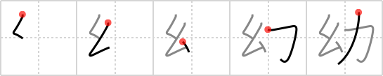

幼
← →
infancy

Reading:
On-Yomi: ヨウ — Kun-Yomi: おさな.い
Heisig story:
Cocoon . . . muscle.
Koohii stories:
1) [Stormchild] 5-9-2006(287): In its infancy, a butterfly is protected by a cocoon, as it doesn't yet have any power of its own.
2) [sweetneet] 26-10-2006(52): During their infancy, children are often wrapped up tight like a cocoon (i.e. in those Snugli carriers) and supported by the muscle of their parents.
3) [ruuku35] 13-6-2006(38): During INFANCY the moth in its COCOON gains its POWER.
4) [decamer0n] 31-5-2007(21): In infancy it is the struggle to break out of the cocoon that develops a butterfly's muscles.
5) [LazyNomad] 30-9-2009(15): Your infancy starts when you have enough power to break your cocoon (amniotic sac).